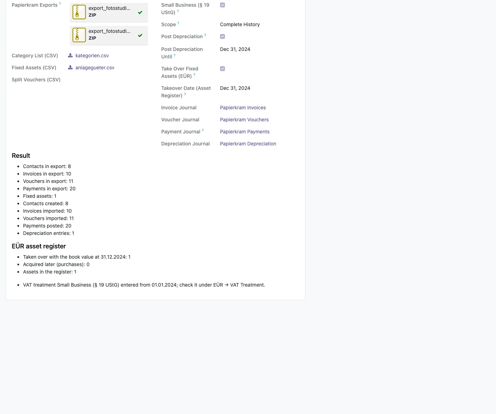
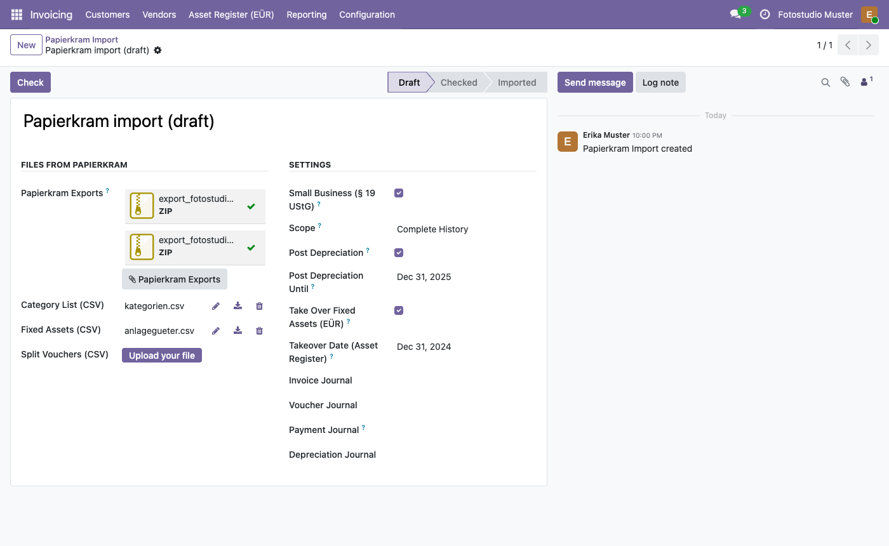
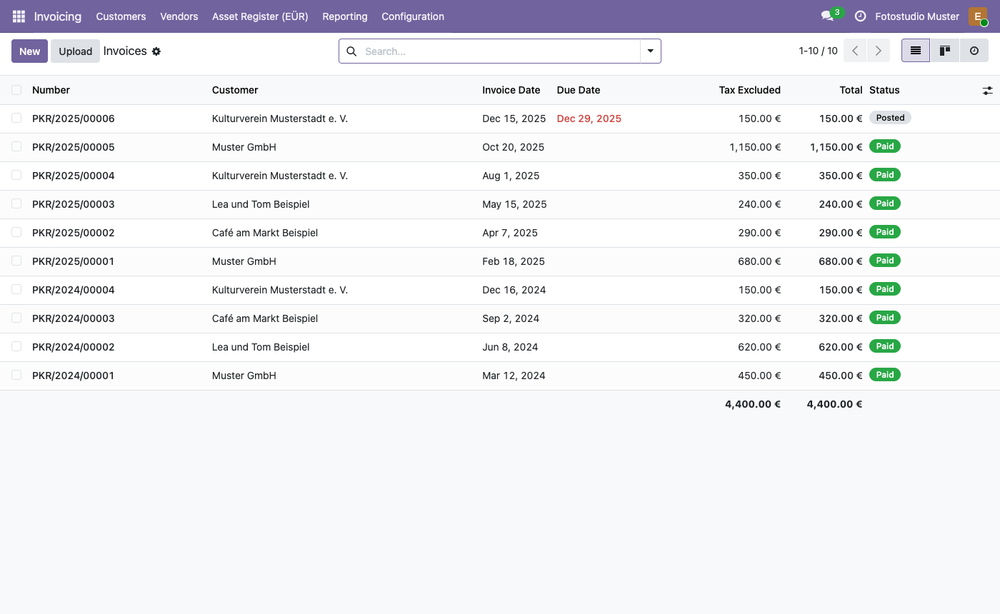

l10n_de_euer), the cash-basis profit
statement: the module Papierkram EÜR Assets takes the fixed
assets into its asset register.
sale_timesheet): the module
Papierkram Timesheets imports products, time entries and the
unbilled work.
Both are installed automatically as soon as their requirements are.
l10n_de).Papierkram is a trademark of its owner. This module is an independent project and not affiliated with Papierkram.